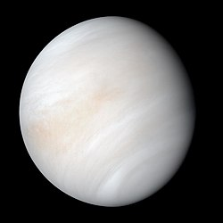

Planets of the Solar System
-
Mercury
- Year Length: 88 days (0.24 years)
- Number of Moons: 0
- Distance from Sun: 0.39 AU (57.9 million km)
-
Venus
- Year Length: 225 days (0.62 years)
- Number of Moons: 0
- Distance from Sun: 0.72 AU (108.2 million km)
- 
-
Earth
- Year Length: 365.25 days (1 year)
- Number of Moons: 1
- Distance from Sun: 1.00 AU (149.6 million km)

-
Mars
- Year Length: 687 days (1.88 years)
- Number of Moons: 2
- Distance from Sun: 1.52 AU (227.9 million km)

-
Jupiter
- Year Length: 4,333 days (11.86 years)
- Number of Moons: 95
- Distance from Sun: 5.20 AU (778.5 million km)

-
Saturn
- Year Length: 10,759 days (29.46 years)
- Number of Moons: 83
- Distance from Sun: 9.58 AU (1,434 million km)

-
Uranus
- Year Length: 30,687 days (84.02 years)
- Number of Moons: 27
- Distance from Sun: 19.20 AU (2,871 million km)

-
Neptune
- Year Length: 60,190 days (164.8 years)
- Number of Moons: 14
- Distance from Sun: 30.05 AU (4,495 million km)